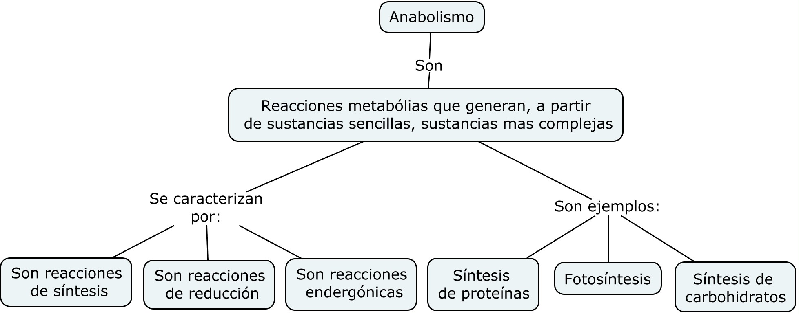

El conjunto de reacciones metabólicas mediante las cuales a partir de compuestos sencillos (inorgánicos u orgánicos) se sintetizan moléculas más complejas. Mediante estas reacciones se crean nuevos enlaces por lo que se requiere un aporte de energía que provendrá del ATP.
Las moléculas sintetizadas son usadas por las células para formar sus componentes celulares y así poder crecer y renovarse o serán almacenadas como reserva para su posterior utilización como fuente de energía.
